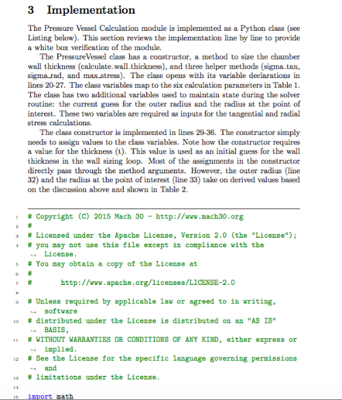
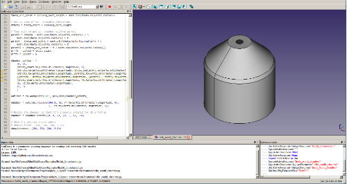
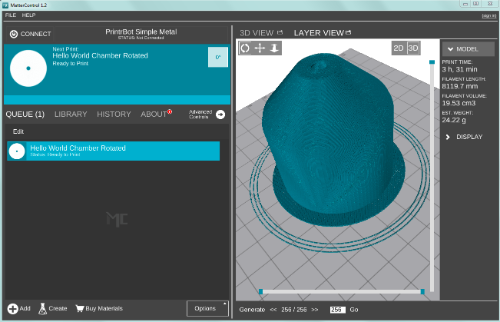
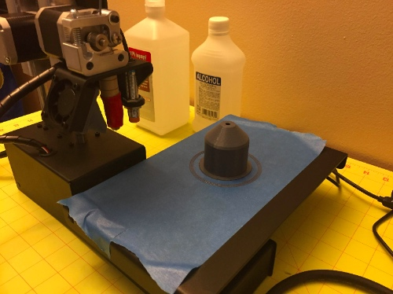
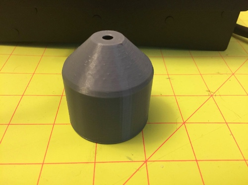
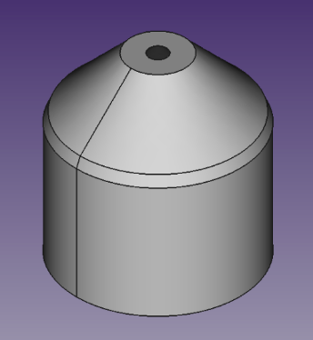
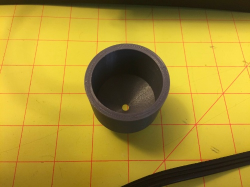

Forums » Discussion »
Sprint 1 Milestone - From MTK to CADQuery to 3D Printer
Added by J. Simmons over 7 years ago
Drum roll please.....
I am very happy to announce that the Yavin team has successfully demonstrated the end to end vision of doing an analysis in MTK, integrating that analysis into a CAD model in CADQuery, and then manufacturing the part using a 3D printer. Take a look at these photos to see the whole story.
We start the process by coding up the engineering analysis in Python on documenting/verifying the analysis in MTK.|  |
| Yavin MTK Document |
|  |
| Yavin Modeling in CADQuery |
{kind=link}
|  |
| Sliced Yavin Geometry Preview |
{kind=link}
|  |
| Completed 3D Print of Yavin Demo Chamber |
{kind=link}
Yaving_Screenshot_1_06-12-15.png (334.7 kB)
{kind=link}
Yaving_Screenshot_1_06-12-15_sm.png (73.1 kB)
{kind=link}
yavin_mtk.png (212 kB)
{kind=link}
slicing_the_chamber.png (394.5 kB)
{kind=link}
slicing_the_chamber_sm.png (90.2 kB)
{kind=link}
hellow_world_chamber_on_printer_sm.jpg (73.8 kB)
{kind=link}
hellow_world_chamber_on_printer.jpg (922.4 kB)
{kind=link}
Replies (1)
RE: Sprint 1 Milestone - From MTK to CADQuery to 3D Printer - Added by J. Simmons over 7 years ago
And here are the results! Look at how closely the printed part matches the CAD geometry from a visual inspection. Note, this is just a demonstration model. We have not calibrated any of our printers, so we are not going for engineering precision or strength (yet).
|  |  |
| Printed Part | CAD Geometry |
{kind=link}
{kind=link}
And here is another view of the printed part.
|  |
| Inside View of Printed Part |
{kind=link}
Finally, I took a couple of measurements using my calipers. I measured the wall thickness to be about 4.1 +/- 0.1 mm (compared to a calculated value of 3.8 mm in MTK). And the inner diameter of the chamber was 39.8 +/- 0.1 mm (compared to a specified radius of 20.0 mm, or a diameter of 40.0 mm). Not too shabby for an uncalibrated printer just printing a demonstration model.
hello_world_chamber1_sm.jpg (51.1 kB)
{kind=link}
hello_world_chamber1.jpg (656.2 kB)
{kind=link}
Yaving_Screenshot_2_06-12-15.png (46.4 kB)
{kind=link}
hello_world_chamber2_sm.jpg (57.7 kB)
{kind=link}
hello_world_chamber2.jpg (725.3 kB)
{kind=link}
Yaving_Screenshot_2_06-12-15_sm.png (28.8 kB)
{kind=link}
(1-1/1)